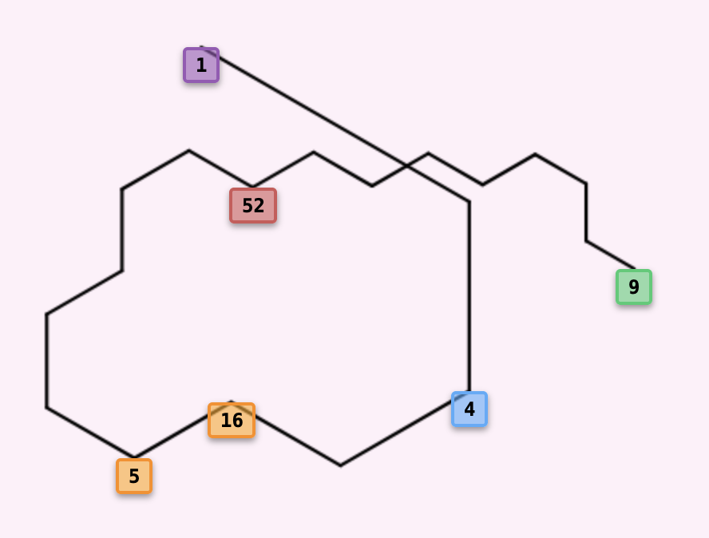
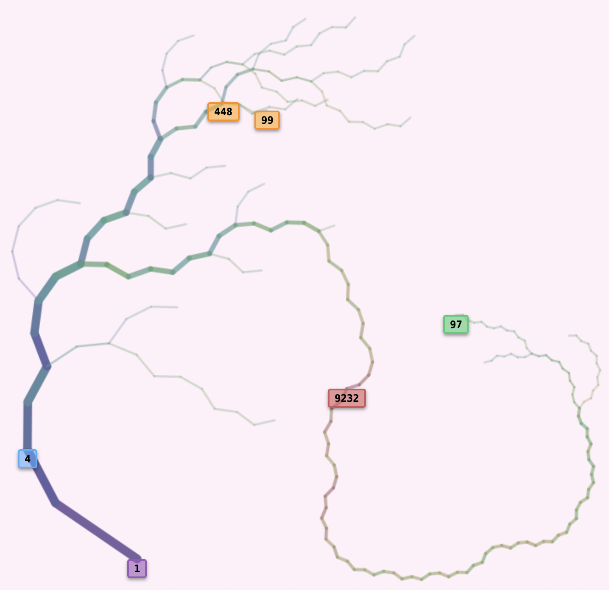

Help & guide
How simple number rules grow into trees, how to read the drawing, and what every control does.
Collatz-like sequences
The Collatz conjecture is one of the most famous unsolved problems in mathematics. Take any positive integer and repeatedly apply two rules:
- If the number is even: divide it by 2
- If the number is odd: multiply it by 3 and add 1
The conjecture says that whatever number you start with, you always reach 1 and then cycle 1 → 4 → 2 → 1 forever. It has been checked for an enormous range of numbers, but there is still no proof.
Example: the trajectory of 9
Start from 9 and apply the rules:
These 19 steps are the trajectory of 9. The number 1 is the root: the smallest number in the cycle 4 → 2 → 1.

The path, from the root
Turns
- 60° clockwise when the next number is even
- 60° counter-clockwise when the next number is odd
Example: other rules, other cycles
The visualizer works with any rules. For instance:
- If even: divide by 2, then add 1
- If odd: multiply by 3 and add 1 (as in the classic rules)
Here the root is 21, the smallest number in the cycle, not 5 (the smallest number of the sequence) and not 40 (where the sequence enters the cycle).
With these rules there is more than one outcome. Another start value ends in a different cycle:
And there is even the dull case of 2, which goes to itself, with nothing else leading to it.
More than two rules
Rules can depend on the remainder modulo any number. Modulo 3, for example:
- If n mod 3 = 0: divide by 3
- If n mod 3 = 1: multiply by 2 and add 1
- If n mod 3 = 2: multiply by 4 and add 2
Two of the cycles these rules reach:
The visualizer accepts any modulus from 2 to 12 and any rules you write. A sample that grows past 1019, or doesn't reach a cycle within 10,000 steps, is treated as diverging and left out.
Reading the tree
Instead of one sequence at a time, the visualizer draws trees:
- You choose a set of starting numbers (the sample), for example 500 numbers between 1 and 1,000.
- Each number is followed until its sequence reaches a cycle.
- All sequences that reach the same cycle form one tree, with the cycle's smallest number as its root.
- Each branch joins a number to the number it leads to.

Labelled numbers
- 1 the root
- 4 the cycle start (where the root leads)
- 97 the deepest leaf
- 9232 the highest number
- 99 the start value (here the last number of the sample)
- 448 the highest number on the way from 99
Branch angles
- 28° towards even numbers
- −49° towards odd numbers
Weight, height, depth
Every number in a tree has three measures. Here they are for a few numbers of the tree above:
| Measure | Meaning | 52 | 53 | 97 | 98 | 99 |
|---|---|---|---|---|---|---|
| Weight | How many leaves have their path through this number | 10 | 6 | 1 | 1 | 1 |
| Height | The highest number on the path to the root | 52 | 160 | 9232 | 148 | 448 |
| Depth | Steps to the root | 11 | 11 | 118 | 25 | 25 |
Thickness, length, colour
Thickness shows weight. A branch is 2 + log₂(weight) wide, and lighter
branches are also more transparent. The logarithm fits because every split can at most halve the weight.
In the tree above, 16 of the 19 leaves end via 40 → 20 → 10 → 5 → 16 → 8 → 4 → 2 → 1, so 40 has weight 16.
Above 40 it splits into a branch of weight 10 (40 ← 13 ← 26 ← 52), heading towards 99, and one of weight 6
(40 ← 80 ← 160 ← 53), heading towards 97.
Length shows depth. Branches get shorter the further they are from the root, in proportion to 1/√depth. Near the root they shrink quickly, deeper in the tree only slowly, so even very deep trees stay on the screen and remain readable.
Colour shows the number. A branch's colour comes from the logarithm of the number it leads to, from purple and blue for small numbers, through cyan, green and yellow, to red for the largest number in the tree. The scale is set per tree, so the highest number is always red. The legend on the canvas shows the same scale with the tree's own range.
Labelled numbers
A few special numbers get coloured labels. Each colour can be switched on and off in the legend.
- RootThe smallest number of the cycle the tree ends in.
- Cycle startThe number the root leads to.
- LongestThe deepest leaf, the one with the longest path to the root, and the highest number on that path.
- HighestThe largest number in the tree, and the leaf whose path climbs to it.
- SmallestThe smallest number in the tree. It only shows when the tree has a number below its root.
- HighlightedThe current start value and the highest number on its path.
Using the visualizer
The controls are in the panel on the left (on a phone, in the sheet at the bottom). The canvas has a toolbar at the top right, the legend at the bottom left, and a details card that opens when you click a branch.
Building trees
A tree is built as soon as the page opens. After that, changing a rule or a sample field rebuilds the trees by itself, as long as the sample has at most 20,000 numbers. For bigger samples the Build trees button glows to show that the drawing is out of date; press it when you are ready.
- Samples
- How many starting numbers to take. More numbers give a fuller tree but take longer.
- Lower limit
- The smallest starting number to consider.
- Range
- How far above the lower limit to look. If the range is not larger than the number of samples, every number in the range is used; otherwise the samples are picked at random.
- Build trees
- Picks a new sample and builds all trees. Large builds run in the background: a progress bar appears, the page stays responsive, and Cancel keeps the previous tree on screen.
If some samples diverge (see above), a short note says how many were left out.
Rules and angles
Each rule sits on one line with its branch angle, so you can see which angle belongs to which rule.
- mod
- The number of rules, from 2 to 12. Each rule applies to the numbers with one remainder modulo this number. Changing it creates new rule lines with default rules and angles.
- ≡0, ≡1, …
-
The rule for numbers with that remainder, written in terms of
n, for examplen/2or3*n+1. You can use numbers,+ - * / % **, brackets, comparison and bit operators,? :, andMath.floor,ceil,round,trunc,abs,sign,sqrt,cbrt,pow,min,max,log,log2,log10andexp. The result is rounded down to a whole number. A rule that can't be used gets a red border; hover over it to see why. Hovering a valid rule shows an example step. - Angle knobs
- The knob on the mod line turns the whole tree (−180° to 180°; 0° points up). The knob on each rule line sets how much a branch turns when it leads to a number with that remainder (−90° to 90°). The arc on the knob shows the angle, and the field next to it shows its value; you can type an exact value there.
Picking a tree
- Root
- The trees found in the sample, largest first; the number in brackets is the tree's leaf count. Picking one also puts its root in Start value.
- Start value
- Type any number and press Enter. Its sequence is added to the tree it belongs to (weights are updated), and it gets an orange label together with the highest number on its path.
- Pick by: Start / Root
- With Start, the view follows the start value to its tree. With Root, the selected tree stays on screen even if the start value belongs to another one. That helps when you are filling in a tree that only a small part of the sample reaches.
Moving around
- Pan: drag the tree (one finger on a touch screen).
- Zoom: scroll, or pinch on a trackpad or touch screen. Zooming keeps the point under the pointer in place.
- Zoom in on a spot: double-click it (Shift + double-click zooms out).
- Fit to screen: the frame button in the toolbar, or F.
- Hover over a branch to see the number, its weight, depth and height.
Number details
Click or tap a branch to open the details card for that number. Its path to the root is highlighted with a soft glow, drawn in the path's own colours.
The card has three lines. Each one is a button:
- next · mod
- Goes to the next number, the one this number leads to.
- depth · height
- Opens the whole path to the root as a table of depth, n, mod and weight.
- weight · children
- Opens a table of the children: the numbers in the tree that lead to this one.
Click any row of a table to make that number the current one; the table stays open, so you can walk down the path or keep climbing through the children. Hovering a row draws a ring around that number on the tree. The at the top of the table, or Esc, closes it.
Rows of the path table use the legend colours:
- greenthe number you picked
- redthe highest number on the path
- yellowthe smallest number, if the path goes below the root
- purplethe root
- bluethe cycle start, as an extra row under the root
Below the tables, Set as start makes the number the start value, Path turns the glow on and off, and Copy copies the number.
Legend and view
- Legend
- Click a colour to hide or show that kind of label. The bar underneath is the colour scale, from 1 to the tree's highest number. The legend folds away with its header.
- Labels L
- Hides or shows all labels.
- Light background T
- Switches the whole page between the dark and the light look. Your choice is remembered; on a first visit the page follows your system setting.
- Zoom out, zoom in, fit
- The first three toolbar buttons (also −, + and F).
Saving and sharing
- Save (the download button)
- Choose an image size (2048, 4096 or 8192 px on the longer side), whether to include the labels, and whether the background should be transparent. Then save a PNG, an SVG (a vector file that stays sharp at any size), or the Tree data: a JSON file with the rules, the angles and the leaves of the current tree. Only the tree on screen is saved.
- Load tree
- Opens a tree data file, or one of the ready-made trees in the list. You can also drop a tree data file anywhere on the page. A loaded tree is rebuilt exactly from its leaves, and the sample fields are filled in so that Build trees gives a similar picture.
- Copy link
- Copies a short link with the tree's settings: the rules, the angles, the sample (number of samples, lower limit and range), the selected root and the start value. Opening the link builds the tree again from these settings. The random sample is drawn with the same seed, so the same numbers are picked and the tree comes out the same. A ready-made tree is linked by its name. Links work for samples of up to 5,000 numbers; above that the button is dimmed, and saving the tree data is the way to share. A tree opened from your own file can't be linked either: share the file.
n is accepted, so a
shared file or link can't run anything else in your browser.
On a phone
- The controls sit in a sheet at the bottom. Tap or swipe its header up to open it, and swipe down to close it.
- Drag with one finger to pan and pinch to zoom.
- Tap a branch to open its details card.
- The legend starts folded, at the top left.
Keyboard
These work whenever you are not typing in a field:
| Key | Action |
|---|---|
| B | Build trees |
| F | Fit to screen |
| L | Show or hide labels |
| T | Light or dark background |
| + − | Zoom in or out |
| ← → ↑ ↓ | Pan, when the canvas has focus (Shift for bigger steps) |
| Esc | Close a menu, the table, the details card, or the phone sheet |
Questions
Is this the Collatz Tree Visualizer?
Yes, it is.
Can I visualize different Collatz trees with this tool?
Yes, you can.
Why did some of my samples disappear?
With some rules, sequences grow without bound. A sample that passes 1019, or takes more than 10,000 steps, is left out; a note after the build says how many.
Why is the link button dimmed?
Either the tree is built from more than 5,000 samples, which would make the page slow to open for whoever gets the link, or the tree was opened from a file, which a link can't point to. In both cases, save the tree data and send the file instead.
The ready-made trees don't load when I open the page from my computer.
Browsers block a page opened straight from disk from reading other files. Open the page from the website, or run a small local server (for example python3 -m http.server) and open it through that.